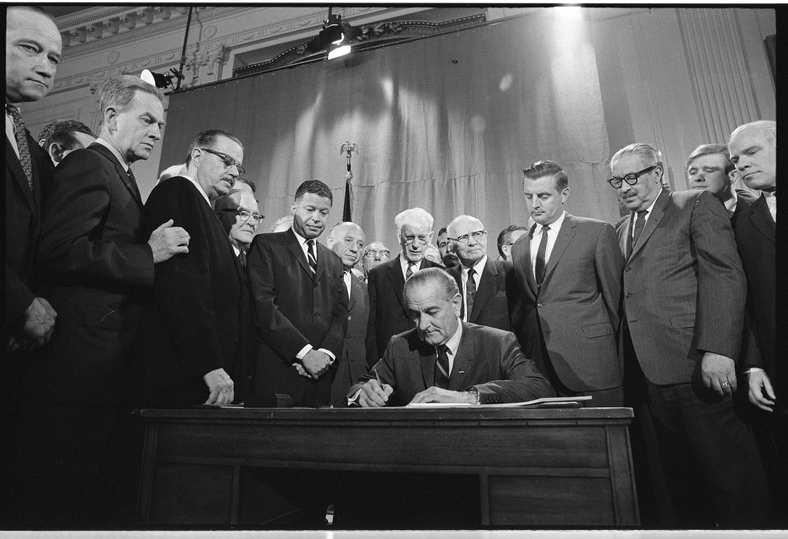

Directions: The five stations below are the record of the movement's reckoning, from the last statute of 1968 to the remedy argument of 1978. Study each station and answer its questions. At every station, sort the record under one heading: won, answered, or undone, and be ready to cite the words that force your sorting. In Part 2, write the unit's closing verdict.
Source: Civil Rights Act of 1968, Title VIII, Sec. 804, 82 Stat. 83 (Statutes at Large, via GovInfo). Quoted from the statute as enacted in 1968; cuts are marked with ellipses.
It shall be unlawful (a) To refuse to sell or rent after the making of a bona fide offer, or to refuse to negotiate for the sale or rental of, or otherwise make unavailable or deny, a dwelling to any person because of race, color, religion, or national origin. (b) To discriminate against any person in the terms, conditions, or privileges of sale or rental of a dwelling, or in the provision of services or facilities in connection therewith, because of race, color, religion, or national origin. ...

List four acts the statute makes unlawful, in its own words. The text names acts and not remedies. From the reading, state the two limits on enforcement, and sort this station: does the weakness of the machinery move the record from won toward undone, or does the right itself settle the sorting?
Source: National Advisory Commission on Civil Disorders, Report of the National Advisory Commission on Civil Disorders, Introduction, 1968 (Teaching American History), as carried in the audited TPSP bank record. Cuts are marked with ellipses.
This is our basic conclusion: Our nation is moving toward two societies, one black, one white, separate and unequal.
Reaction to last summer's disorders has quickened the movement and deepened the division. Discrimination and segregation have long permeated much of American life; they now threaten the future of every American. ...
What white Americans have never fully understood but what the Negro can never forget, is that white society is deeply implicated in the ghetto. White institutions created it, white institutions maintain it, and white society condones it.
It is time now to turn with all the purpose at our command to the major unfinished business of this nation.
The commission was appointed to explain the uprisings. Whom does it hold responsible for the ghetto, in its three verbs, and what future does it predict if the movement apart is not reversed? President Johnson shelved its recommendations. Sort this station, and name the half of the record, the diagnosis or the shelving, that drives your sorting.
Source: Swann v. Charlotte-Mecklenburg Board of Education, 402 U.S. 1 (1971), opinion of the Court, as transcribed from United States Reports by Justia; Milliken v. Bradley, 418 U.S. 717 (1974), opinion of the Court, United States Reports, via the Library of Congress. Cuts are marked with ellipses.
Swann, 1971: We find no basis for holding that the local school authorities may not be required to employ bus transportation as one tool of school desegregation. Desegregation plans cannot be limited to the walk-in school.
Milliken, 1974: ... without an interdistrict violation and interdistrict effect, there is no constitutional wrong calling for an interdistrict remedy.
State what each decision does to the map of desegregation. In Charlotte the district and the county were one system; in Detroit the remedy was stopped at the city line. Can both stations be true at once in one sorting? Place each decision under its own heading and defend the split.
Source: Regents of the University of California v. Bakke, 438 U.S. 265 (1978), syllabus and opinion of Powell, J., United States Reports, via the Library of Congress. Cuts are marked with ellipses.
Racial and ethnic classifications of any sort are inherently suspect and call for the most exacting judicial scrutiny. While the goal of achieving a diverse student body is sufficiently compelling to justify consideration of race in admissions decisions under some circumstances, petitioner's special admissions program, which forecloses consideration to persons like respondent, is unnecessary to the achievement of this compelling goal and therefore invalid under the Equal Protection Clause. ...
In such an admissions program, race or ethnic background may be deemed a plus in a particular applicant's file, yet it does not insulate the individual from comparison with all other candidates for the available seats.
Separate the decision into what it struck down and what it preserved, quoting the words for each. Is this record won, answered, or undone? Defend the sorting against the strongest reading from the other side of the case.
Source: Lyndon B. Johnson, Howard University Commencement Address, June 4, 1965 (American Rhetoric), as carried in the audited TPSP bank record. Cuts are marked with ellipses.
But freedom is not enough. You do not wipe away the scars of centuries by saying, "Now you are free to go where you want, and do as you desire, and choose the leaders you please."
You do not take a person who, for years, has been hobbled by chains and liberate him, bring him up to the starting line of a race and then say, "You are free to compete with all the others," and still justly believe that you have been completely fair. ...
We seek not just freedom but opportunity. We seek not just legal equity but human ability, not just equality as a right and a theory, but equality as a fact, and equality as a result.
This address was given in 1965, before every other station in this file. What standard does it set for judging them? Run Stations 1 and 4 against the standard: does a housing right without enforcement orders, and race kept as one factor with the quota struck down, meet equality as a result, or stop at equality as a right? Sort this station last, because it judges the others.
The unit opened with a question: how did the civil rights movement change American law and American life, and what did it leave unfinished? The five stations, with the reading, are the evidence for the unit's final answer. Sort first, then judge.
The sorting. Enter each station number under won, answered, or undone, with one quoted phrase from the station as the evidence for its place. Station 3 carries two decisions; sort each one separately.
Your verdict. State the strongest single claim the documents support about what the movement changed and what it did not. State the claim in the first two sentences, then support it from at least three stations, citing stations by number.
The strongest counterclaim. State the strongest case against your verdict, at full strength, from the documents. Then answer it: what does your verdict explain that the counterclaim cannot?
Four unlawful acts, and the sorting. Any four in the statute's words: to refuse to sell or rent after a bona fide offer; to refuse to negotiate for the sale or rental of a dwelling; to otherwise make unavailable or deny a dwelling; to discriminate in the terms, conditions, or privileges of sale or rental; to discriminate in the provision of services or facilities in connection with a sale or rental, each because of race, color, religion, or national origin. The two enforcement limits from the reading: the Department of Housing and Urban Development could investigate and persuade but could not order a violator to stop, and the person denied housing otherwise had to sue privately at personal expense. Sorting: won is the cleanest placement, since the third great statute completed the legal ban on discrimination in public life, in work, at the ballot box, and now in housing. A student who sorts it toward undone must carry the machinery with evidence, and the strongest such answers note that a right priced at the cost of a private lawsuit reaches the households who can pay for it. Credit either sorting when the enforcement half is stated accurately; fail a sorting that treats the statute as self enforcing.
Responsibility, prediction, and the sorting. The commission holds white society responsible in three verbs: white institutions created the ghetto, white institutions maintain it, and white society condones it. Its prediction is stated as its basic conclusion: the nation moving toward two societies, one black, one white, separate and unequal, with the reaction to the disorders quickening the movement and deepening the division. The sorting turns on which half of the record the student weighs. As a diagnosis, the record is the era's fullest official statement of the unfinished agenda, and students sort it undone because the condition it names was left standing. As a fate, it is answered: Johnson, who had appointed the commission, shelved its recommendations for programs in jobs, housing, and education. Both placements earn credit when the student names the driving half. The commission's own closing line, the major unfinished business of this nation, is the phrase strong answers borrow.
The map, and the split sorting. Swann (1971) keeps the remedial map whole inside one district: bus transportation may be required as one tool of desegregation, and plans cannot be limited to the walk-in school, so Charlotte's single city and county system could be integrated across its full territory. Milliken (1974) cuts the map at the district line: without an interdistrict violation and interdistrict effect, there is no constitutional wrong calling for an interdistrict remedy, so Detroit's remedy stopped at the city line and the largely white suburbs stood outside it. Both decisions sort separately, and the split is the finding: Swann under won, as the high point of court ordered desegregation; Milliken under answered, as the backlash written into doctrine, or under undone, as the mechanism by which schools resegregated by address. A single sorting for the whole station has missed the lesson, because the two holdings point in opposite directions three years apart.
Struck down, preserved, and the sorting. Struck down: the special admissions program at the Davis medical school, which set aside sixteen of one hundred seats and foreclosed consideration to persons like Allan Bakke, held unnecessary to the goal of a diverse student body and invalid under the Equal Protection Clause, with racial classifications inherently suspect and subject to the most exacting judicial scrutiny. Preserved: consideration of race itself, since achieving a diverse student body is sufficiently compelling to justify it under some circumstances, and race or ethnic background may be deemed a plus in a particular applicant's file without insulating the individual from comparison with all other candidates. Sorting: Bakke is the decade's settlement in one document, and strong answers sort it as answered, the backlash limiting remedy without ending it, or as a split record, won for the survival of affirmative action and undone for the remedial argument Johnson had made at Howard. Require the student to answer the strongest reading from the other side: the quota's defenders note that sixteen seats in a class of one hundred was the first remedy with numbers attached, and its critics note that a line drawn on race is what the Fourteenth Amendment had been invoked against since Brown.
The standard, and the two tests. The standard is Johnson's distinction of 1965: not just equality as a right and a theory, but equality as a fact, and equality as a result, argued through the runner hobbled by chains and then told he is free to compete. Run against it, Station 1 falls short on the standard's own terms: the Fair Housing Act opened the gate, in Johnson's image, while its enforcement left many citizens without the ability to walk through it, which is why strong answers call it equality as a right completed and equality as a result deferred. Station 4 falls short differently: Bakke kept race usable as one factor among others, a tool aimed at results, while striking down the one remedy in the file that counted results in seats. Station 5 itself sorts undone by the standard it sets, and that placement is the unit's closing irony, stated plainly: the clearest statement of what remained to do was delivered in 1965, by the president, before the famous decade had ended.
Full credit should be awarded if the verdict:
Teacher note on the verdicts. The most common failure is the sorting disguised as a verdict, three lists with no claim over them. Send those back to the first two sentences. The second failure is a verdict that uses only 1968, in either direction: a file that ends in 1978 cannot be judged from its first year, and the strongest verdicts in the room will usually run from the statute of April 1968 to the settlement of June 1978 in a single line.